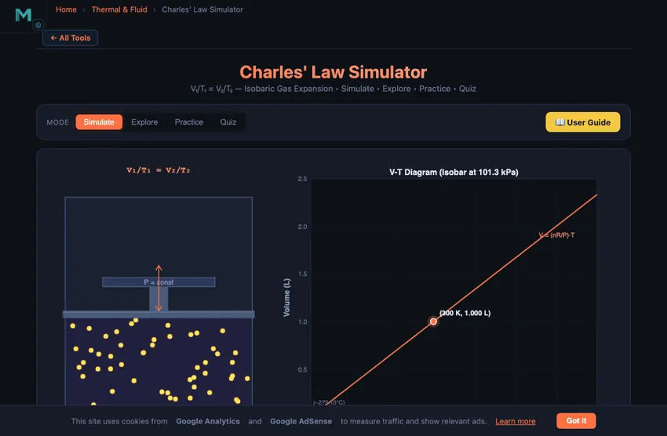

Charles' Law Simulator
V₁/T₁ = V₂/T₂ — Isobaric Gas Expansion • Simulate • Explore • Practice • Quiz
3D Model — Charles' Law Simulator
Interactive 3D model of this apparatus. Pick a component on the right, then drag to rotate · scroll to zoom · right-drag to pan.
1 Overview
The Charles' Law Simulator is an interactive learning tool that demonstrates the direct proportional relationship between gas volume and absolute temperature at constant pressure. Governed by the equation V₁/T₁ = V₂/T₂, this isobaric process is visualised through animated gas particles inside a piston-cylinder assembly, a real-time V-T diagram, and live numerical readouts for volume, temperature in Kelvin and Celsius, the V/T ratio, and pressure.
This tool is ideal for mechanical engineering students, thermodynamics trainees, physics learners, and HVAC professionals who need to understand how heating a gas causes it to expand and cooling causes it to contract — all while pressure remains unchanged. The four modes (Simulate, Explore, Practice, Quiz) provide a complete learning pathway from visual experimentation to problem-solving and self-assessment.
2 Configuring the System
The simulator opens in Simulate mode with a default temperature of 300 K (26.85 °C), a volume of 1.000 L, and a constant pressure of 101.33 kPa. The canvas displays animated gas particles inside a piston-cylinder, with the piston position reflecting the current gas volume. On the right, the V-T diagram plots the current state on a linear isobar.
To start experimenting, drag the Temperature (T) slider from 100 K to 600 K. As you increase the temperature, observe the gas particles moving faster, the piston rising to accommodate the expanding gas, and the plotted point moving along the isobar on the V-T diagram. The V/T ratio readout should remain constant throughout, confirming the law. The temperature display shows both Kelvin and Celsius values so you can practise converting between the two scales — a critical skill since Charles' Law requires absolute temperature in Kelvin.
3 Running the Cycle
Simulate mode provides hands-on interaction with Charles' Law. The animated canvas shows particles whose speed scales with the square root of temperature, giving you visual feedback about molecular kinetic energy. When you lower the temperature toward 100 K, particles slow dramatically and the piston contracts. When you raise it toward 600 K, particles zip around and the gas expands significantly.
The readout cards display: Volume in litres, Temperature in Kelvin, Temperature in °C, the V/T Ratio in mL/K (which stays constant), Pressure (held constant at 101.33 kPa), and the governing formula V₁/T₁ = V₂/T₂. Try doubling the absolute temperature from 300 K to 600 K and verify that the volume also doubles — this is the hallmark of a direct proportional relationship. Notice on the V-T diagram that the data point traces a straight line passing through the origin at 0 K, illustrating the concept of absolute zero where the gas would theoretically have zero volume.
4 The Underlying Theory
Click the Explore tab to access curated concept cards organised into four categories: Gas Laws Basics, Charles' Law, Absolute Zero, and Applications. Each card includes clear explanations, diagrams, and worked examples covering topics like the historical discovery by Jacques Charles, the mathematical derivation of V/T = constant, isobaric processes, and the significance of absolute zero at 0 K (−273.15 °C).
The Applications category highlights real-world uses: hot air balloons rely on Charles' Law to generate lift by heating air inside the envelope; car tire pressures change with ambient temperature; bread rises during baking as CO₂ gas expands; and weather balloons expand as they ascend. Use the category tabs and concept grid to navigate through all 16 topics and build a thorough understanding of how gas expansion connects to everyday engineering and science.
5 Try a Problem
Practice mode generates randomised problems using the V₁/T₁ = V₂/T₂ relationship. You will be given three known values and asked to solve for the fourth — for example, finding the final volume after heating a gas from 250 K to 400 K. Enter your answer, click Check for instant feedback, or use Show Solution to see the full step-by-step working. Your running score is tracked to measure improvement over time.
Quiz mode presents five questions per session, mixing conceptual questions about isobaric processes and absolute temperature with numerical calculations. After answering all five, review your performance and identify areas that need further study. This mode is especially useful for preparing for thermodynamics examinations and technical certification tests where gas law calculations are tested.
6 Engineering Notes
- Always use absolute temperature in Kelvin when applying Charles' Law. Using Celsius will produce incorrect results because 0 °C is not zero temperature — convert with T(K) = T(°C) + 273.15.
- Watch the V/T ratio readout as you slide the temperature — it should remain constant, confirming the gas expansion follows the isobaric law.
- On the V-T diagram, notice that the linear isobar, if extended, passes through the origin (0 K, 0 L). This extrapolation historically helped establish the Kelvin temperature scale.
- Compare the behaviour at low temperatures (near 100 K) with high temperatures (near 600 K). Real gases would liquefy at very low temperatures, so the law only applies above the gas condensation point.
- Use this simulator alongside the Boyle's Law Simulator and the Ideal Gas Law Simulator to see how holding different variables constant produces different gas law relationships.
- In Practice mode, double-check that your answer uses the correct temperature scale before submitting. Converting Kelvin to Celsius (or vice versa) is one of the most common mistakes in gas law problems.
Charles' Law — Understanding Volume-Temperature Relationships in Gases

Charles' Law is one of the fundamental gas laws in thermodynamics, describing the direct relationship between the volume and absolute temperature of a gas at constant pressure. First observed by Jacques Charles in 1787 and later published by Joseph Louis Gay-Lussac in 1802, it states that for a fixed mass of an ideal gas at constant pressure (isobaric conditions), the volume is directly proportional to the absolute temperature: V/T = constant. This means that when you heat a gas, it expands proportionally, and when you cool it, it contracts. The mathematical expression V₁/T₁ = V₂/T₂ allows engineers and scientists to predict how gas volumes change with temperature.
The relationship produces a characteristic straight line on a V-T diagram when plotted in Kelvin. If extended backward, every such line (called an isobar) passes through the origin at 0 K (−273.15°C), the theoretical point known as absolute zero where gas volume would become zero. This extrapolation was historically significant because it helped establish the Kelvin temperature scale and the concept of absolute zero. This simulator lets you visualise this behavior with animated gas particles inside a piston-cylinder assembly, showing how particle speed and gas volume change with temperature.
How Does Charles' Law Work?
At the molecular level, temperature is a measure of the average kinetic energy of gas molecules. When temperature increases, molecules move faster and collide more forcefully with the container walls. If the pressure is held constant (as in a piston-cylinder with a freely moving piston), the container must expand to accommodate the more energetic molecules. The faster-moving molecules push the piston outward until the internal pressure again equals the external (constant) pressure. Conversely, cooling the gas slows the molecules, and the piston moves inward as the gas contracts. The key requirement is that the pressure remains constant — meaning the gas is free to expand or contract against a constant external force.
Charles' Law and Absolute Zero
One of the most profound implications of Charles' Law is the concept of absolute zero. By plotting volume versus temperature for a gas at constant pressure, you get a straight line. Extrapolating this line to zero volume gives a temperature of −273.15°C, or 0 K. This is the theoretical lower limit of temperature, where molecular motion would cease entirely. In practice, all gases liquefy well before reaching absolute zero, so the law only applies to gases above their condensation point. Lord Kelvin used this extrapolation to define the absolute temperature scale, making Charles' Law central to the foundation of thermodynamics.
Real-World Applications of Charles' Law
Hot air balloons are the most iconic application of Charles' Law. By heating the air inside the balloon envelope, the air expands and becomes less dense than the surrounding cooler air, generating buoyant lift. Pilots control altitude by adjusting the burner. Automobile tires experience pressure changes with temperature — on a hot summer day, the air inside tires expands, increasing pressure, which is why tire pressure should be checked when tires are cold. Baking relies on Charles' Law when CO₂ gas produced by yeast or baking powder expands in the oven, causing bread and cakes to rise. Weather balloons launched into the atmosphere expand as they ascend because temperature and pressure both decrease, causing the gas inside to occupy a larger volume.
The Hot-Air Balloon Calculation
A hot-air balloon envelope holds 2000 m³ of air. Ambient temperature is 20 °C (293 K). To lift the balloon and a basket totalling 1500 kg, how much do you need to heat the air?
| Step | Working | Result |
|---|---|---|
| Ambient air density (at 20 °C) | ρcold = 1.20 kg/m³ | — |
| Mass of cold air in 2000 m³ | 2000 × 1.20 | 2400 kg |
| Required balloon-air mass (to lift envelope + basket + 1500 kg) | 2400 − 1500 | 900 kg |
| Required hot-air density | 900/2000 | 0.45 kg/m³ |
| From P·M = ρ·R·T at constant P | Thot = Tcold·(ρcold/ρhot) = 293 × (1.20/0.45) | 781 K (~508 °C) |
508 °C of air is too hot for a fabric balloon envelope — modern hot-air balloons heat to only about 100 °C above ambient, so they can lift less than this calculation suggests. The fabric of a real envelope tolerates about 120−130 °C. To lift 1500 kg in practice you would need a much larger envelope, around 7000 m³ for a 100 °C temperature rise. Charles’s law gives you the theoretical limit; material limits restrict what is actually possible.
Why Kelvin, Not Celsius
The most common error in gas-law problems is using Celsius in the V/T or P/T ratio. The law is V1/T1 = V2/T2 — with T in absolute units. A gas at 0 °C and a gas at 100 °C don’t have a 1:0 volume ratio (which would imply infinite expansion); they have a 273:373 ratio, which gives volume expansion of about 36 %. Use Celsius in the ratio and you get garbage.
Charles’s extrapolation was historically important. He noticed that the V-vs-TCelsius line for several gases all extrapolated back to the same temperature, around −273 °C. That coincidence wasn’t a coincidence: it was the discovery of absolute zero. Lord Kelvin formalised it in 1848 with the Kelvin scale, which sets that intercept to T = 0. The whole edifice of statistical mechanics and the third law of thermodynamics rests on that one observation.
Real-World Charles’s Law Cases
- Car tyre pressure rises in summer. Mostly Gay-Lussac (constant volume) rather than Charles (constant pressure), but the underlying physics is the same. A 6−8 psi rise from 15 °C morning to 50 °C hot road is routine.
- Bread rising in the oven. CO2 bubbles produced by yeast double or triple in volume between dough temperature (25 °C) and oven temperature (200 °C). Plus the gas evaporates from the dough faster at higher T. The combined effect is what makes bread rise.
- Weather balloons. A weather balloon launched at sea level (1.0 atm, 20 °C) might reach 30 km where pressure is 0.01 atm and temperature is −50 °C. Combined gas law: volume ratio is (1.0/0.01) × (223/293) = 76. The balloon bursts at altitude rather than continuing forever.
References for Gas Laws
- Cengel, Y. A. & Boles, M. A. — Thermodynamics: An Engineering Approach, 9th ed., Chapter 3.
- Charles, J. (unpublished, 1787) / Gay-Lussac, J. L. (1802) — Recherches sur la dilatation des gaz et des vapeurs.
- Kelvin, W. T. (1848) — On an Absolute Thermometric Scale. Phil. Mag.
Explore Related Simulators
If you found this Charles' Law simulator helpful, explore our Ideal Gas Law Simulator, Boyle's Law Simulator, Specific Heat Capacity Simulator, Thermal Expansion Simulator, and Thermodynamics Cycles Simulator for more hands-on practice.